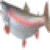
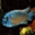
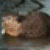
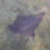
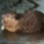
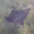
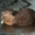
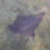

(How) do machines perceive when looking through rose-coloured glasses?


 






Machine Learning and Deep-Neural-Networks are perhaps the most extreme examples of modern technologies that will have large impacts on society and the individual but are mysterious and inscrutible. These technologies are being used at an accelerating rate to manage data and solve complex tasks. For example, Deep-Neural-Networks (DNNs) are being applied in computer vision to classify images of objects into categories, which is relevant for autonomous driving. But machine learning has also spread in a much more subtle way, for example, concerning personal data analysis in the digital domain. For example, machine learning is being used in various apps, such as YouTube and Instagram, to suggest personalized advertising based on behavioral data. It has turned out that machine learning is incredibly successful in suggesting advertising that accurately fits the interests of the user. But the dichotomy resulting from how inscrutable, yet successful the technology is may cause concern.
Lawmakers, politicians, and individuals are barely catching up in understanding and grasping the repercussions of tech-companies using these technologies to maximize their yields and capital. Moreover, apps and digital media are spreading even faster than 5 years ago and culture is moving into the digital domain. All this before we even understand what type of consequences these types of technologies will bring to us. It opens up questions regarding if individuals are manipulated by AI-selected content in digital environments, if this type of system will bring unfavorable repercussions for the individual human being, or if personal freedom is being exchanged for maximization of tech-company profits.
Worries regarding AI going rogue, turning against its' creator and taking over the world are unrealistic. But what may be more relevant is that machine learning methods are changing society and the individual in ways we cannot yet foresee and with consequences that are irreversible. Conversely, it is imperative to attempt to understand the effects of these technologies.
'Adversarial attack: rose', is an attempt to make computer vision tangible to the individual. It shows how multiple images, representing various different image-categorious, are morphed into the target image-category rose by adverserial attacks. It visualizes how DNNs perceive? images and how adversarial attacks manipulate an image to maximize probabilites of a target category. These images show iterations of adversarial attacks on images of various image-categories and were generated by a software me and 6 other students developed as a team. The next page provides further information on that project. The software was developed to be used in a research context at the Machine Learning Working Group of the University of Tübingen and used as a method to make DNNs more robust to OOD data and unfavourable environments.
This project represents how AI is slowly and subtly taking over and affecting different aspects of society. Before we realize it, society may have completely changed and taken form of something completely different. Is this type of technology an attack on society? Are adversarial attacks attacking society by supporting a type of development that we are not ready for, or is it all going the right way?
Finally, this project also draws connections to research on the nature of consciousness and the nature of visual perception. It opens up many questions such as:
What is the nature of perception?
Can machinal structures develop consciousness?
What differentiates Deep-Neural-Networks from neural structures in biology and what is the underlying nature of consciousness and visual conscious perception?
...